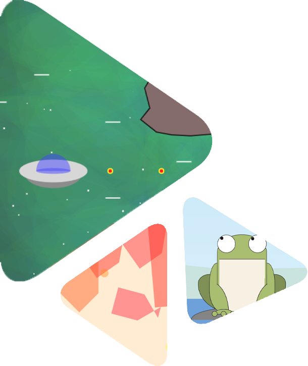

- A video game is an electronic game that involves interaction with a user interface or input device – such as a joystick, controller, keyboard, or motion sensing device – to generate visual feedback for a player. This feedback is shown on a video display device, such as a TV set, monitor, touchscreen or virtual reality headset. Video games are often augmented with audio feedback delivered through speakers or headphones, and sometimes with other types of feedback, including haptic technology.
- Video games are defined based on their platform, which include arcade games, console games, and PC games. More recently, the industry has expanded onto mobile gaming through smartphones and tablet computers, virtual and augmented reality systems, and remote cloud gaming. Video games are classified into a wide range of genres based on their type of gameplay and purpose.
Game
GAMING STATION

History
There are three graphic slef-made games you can try!
